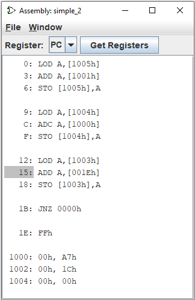

装配查看器
汇编查看器窗口显示当前电路中寄存器中存储的地址值以及该地址处的汇编语言指令。

每当寄存器中存储的值发生更改时，新地址就会在程序集查看器中突出显示。
选择要显示的寄存器并加载包含汇编语言指令的文本文件。
文件名必须具有 .lss 后缀。 示例文本文件是
0: LOD A,[1005h]
3: ADD A,[1001h]
6: STO [1005h],A
9: LOD A,[1004h]
C: ADC A,[1000h]
F: STO [1004h],A
12: LOD A,[1003h]
15: ADD A,[001Eh]
18: STO [1003h],A
1B: JNZ 0000h
1E: FFh
1000: 00h, A7h
1002: 00h, 1Ch
1004: 00h, 00h
文本文件中的指令地址为十六进制，没有前导零，并且在行开头至少有一个前导空格，后跟冒号和汇编语言指令。
在装配窗口中按 F2 可使时钟前进两格。